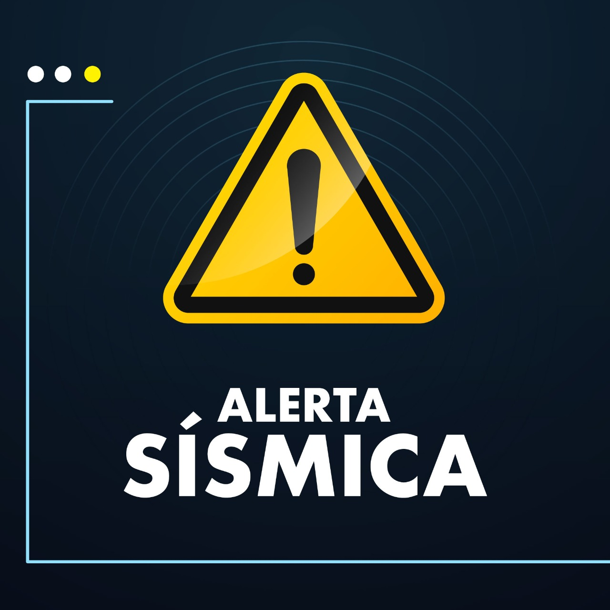

Antes del Terremoto
La preparación es clave para minimizar riesgos. Sigue estos consejos:
- Prepara un kit de emergencia con agua, alimentos no perecederos, linterna, radio y botiquín.
- Fija muebles y electrodomésticos pesados a la pared.
- Identifica áreas seguras en tu hogar.
- Realiza simulacros de evacuación con tu familia.

Durante el Terremoto
Mantén la calma y sigue estas instrucciones:
- Refúgiate bajo una mesa resistente o junto a un muro interno.
- Si estás afuera, aléjate de edificios y postes eléctricos.
- Protege tu cabeza con las manos.
- No uses ascensores ni corras hacia las salidas.

Después del Terremoto
Una vez que el movimiento ha cesado, sigue estos pasos:
- Revisa si hay heridos y brinda primeros auxilios.
- Inspecciona fugas de gas y daños estructurales.
- Escucha indicaciones de las autoridades por radio.
- Mantente alerta a réplicas y ten tu kit de emergencia a mano.

Señales de Alerta Sísmica
En algunas regiones existen sistemas de alerta temprana. Aprende a reconocerlos y actuar a tiempo.

Videos Educativos
Aprende más sobre cómo actuar en un terremoto con estos videos informativos.